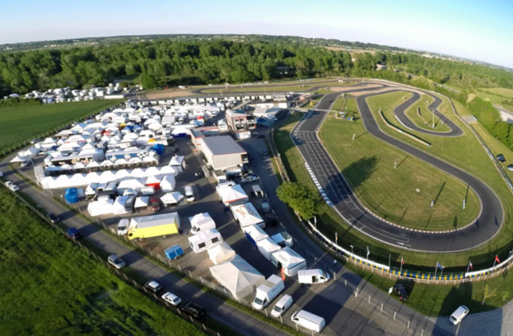
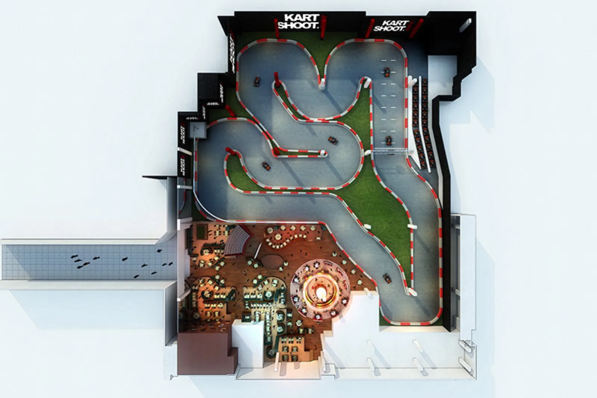
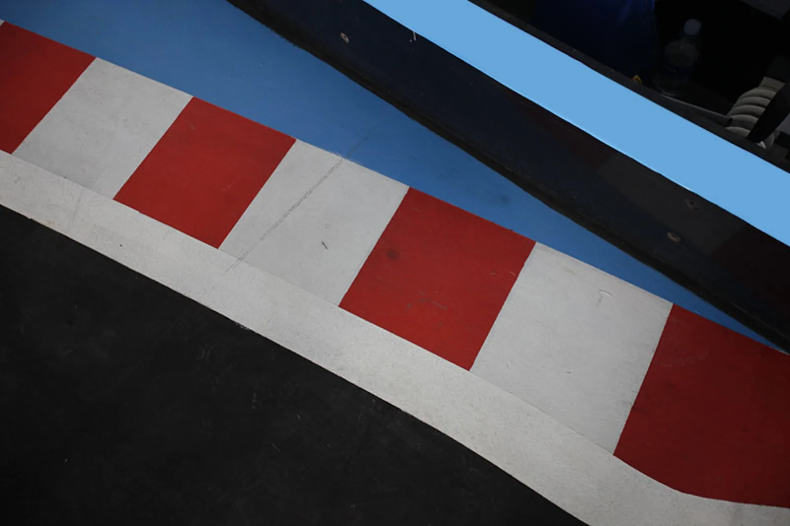
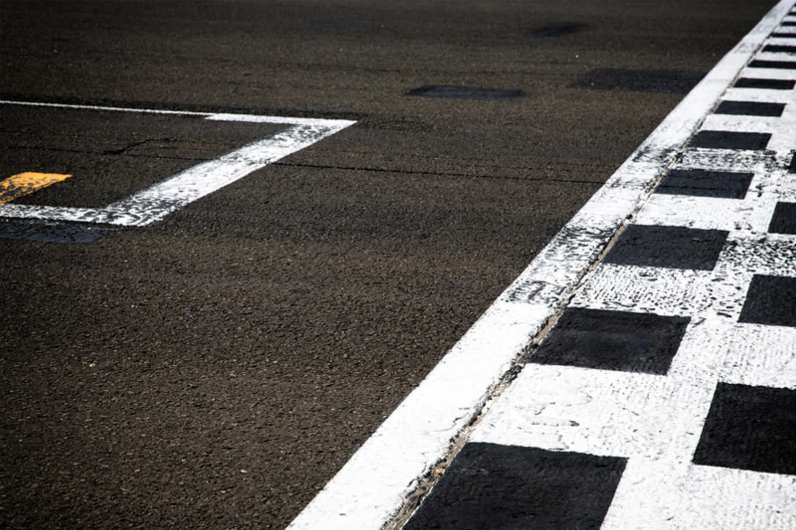
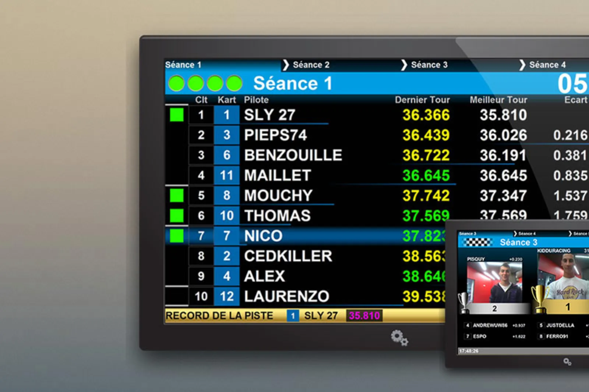
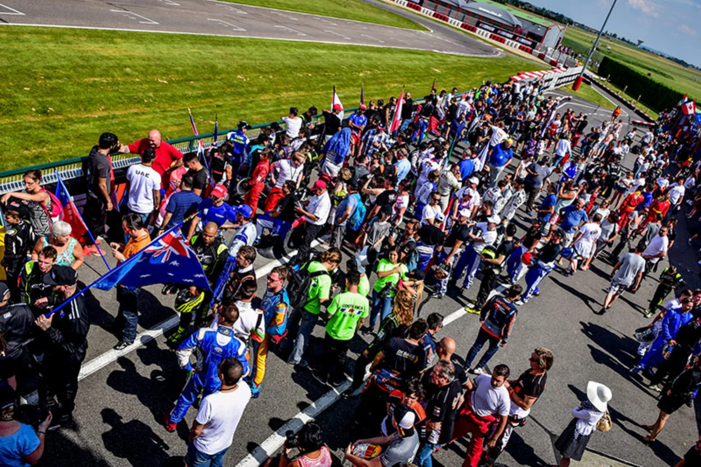
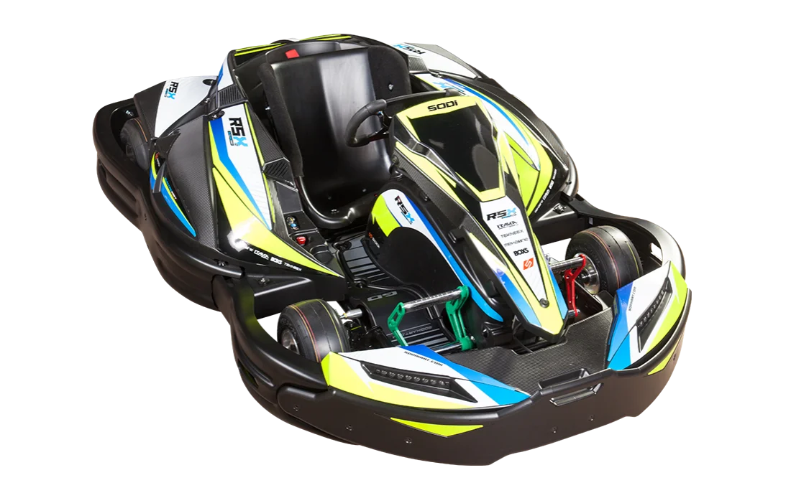
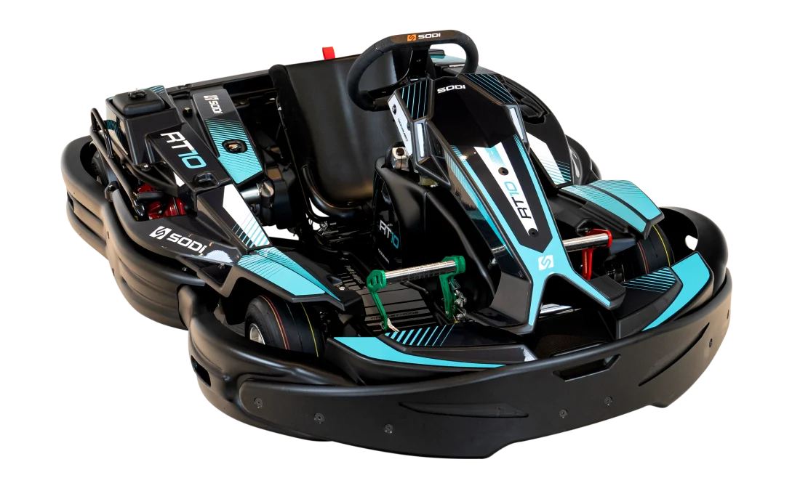

Le kart qui rapporte.
Un kart SODI est un outil de production : il doit rouler plus d'heures, coûter moins en pièces et attirer plus de clients. Tout le reste, de la faisabilité au service J+1, est conçu pour tenir cette promesse.
De l'idée à l'ouverture,
en 15 étapes.
Investisseur, franchisé, collectivité ou entrepreneur du loisir : un seul interlocuteur, de l'étude de faisabilité à la première course. Trois concepts, un parcours balisé, des experts dans 46 pays.
Concept 01Indoor urbain
Dès 1 000 m², électrique ou thermique silencieux, ouvert toute l'année. Le format qui tire le marché mondial.

Concept 02Outdoor & sport
Pistes longues, karts Sport et RT10, événements d'entreprise, courses d'endurance et affiliation SWS.

Concept 03Complexe multi-loisirs
Karting, gaming, restauration : le kart comme locomotive d'un lieu de destination, avec Game of Karts et KidRacer.
- Étude de faisabilité et de marché local
- Business plan et plan de financement
- Choix et validation du site, dès 1 000 m²
Nos experts vous aident à dimensionner le projet : nombre de karts, rotation, clientèle dès 8 ans, karts dès 3 ans. L'investissement indoor type se situe entre 265 et 745 k€, dont 80 à 250 k€ de flotte.
- Concept et thématisation
- Tracé de piste pensé pour la rotation et le spectacle
- Mise en conformité : NF S52-002, EN 16230-1, 2006/42/CE
Le bureau d'études pistes du groupe dessine un tracé qui maximise le nombre de karts en piste en toute sécurité.
- Flotte SODI neuve ou reconditionnée Sodi Restart
- Barrières de sécurité et revêtements
- Chronométrage Apex Timing et écrans
- Équipement pilote BOX'S, pièces ITAKAshop
Une seule commande, une seule livraison, une seule garantie : karts, barrières, revêtement, chronométrage et équipement arrivent ensemble.
- Formation technique et commerciale des équipes
- Paramétrage EMS, SODISCAN, R-Display, Game of Karts
- Ouverture et affiliation Sodi World Series
Dès le premier jour, vos clients entrent dans le plus grand classement de karting loisir au monde : 150 000 pilotes qui reviennent pour grimper au classement.
- Service client J+1, Flying Doctors, audits sur piste
- Pièces ITAKAshop, renouvellement et reconditionnement
Votre flotte reste un outil de production rentable : maintenance planifiée grâce aux compteurs d'heures, pièces en J+1, audit annuel, renouvellement anticipé.




Combien rapporte
une flotte SODI ?
Ajustez vos hypothèses : nombre de karts, prix d'une session, sessions par kart et par jour, jours d'ouverture. Le simulateur estime votre chiffre d'affaires annuel. Un expert affine ensuite avec vos données réelles.
Estimation indicative à partir de vos hypothèses. Ne tient pas compte des charges, de la saisonnalité ni des revenus annexes (bar, événements d'entreprise, SWS). Sessions de 10 minutes. Un expert Sodikart construit avec vous le business plan complet.
Trois façons de
faire évoluer votre piste.
Chaque kart livré porte sa fiche identitaire, ses compteurs d'heures et sa livrée My Studio. L'EMS garantit l'équité entre les karts : moins de réclamations, plus de reconduites.

Passer au SR6
ERGOMAX®, un seul kart pour tous les gabarits. Reprise ou reconditionnement de votre ancienne flotte via Sodi Restart.
Fiche SR6
Passer au RSX2
≈1 h d'autonomie, charge & verrouillage, SODISCAN. L'électrique pour l'indoor urbain, sans odeur ni bruit, avec une gestion de flotte en temps réel.
Pilier électrique
Choisir Sodi Restart
Karts d'usine reconditionnés, packs Serenity à Prestige, 27 modèles historiques. Le budget d'entrée pour démarrer ou compléter une flotte.
Sodi Restart10 000 références.
Livrées en J+1.
ITAKAshop, créé en 1991, est le premier site de vente en ligne de karts en Europe : un entrepôt de près de 10 000 m² et des marques maison conçues pour vos karts.
ITAKAshop
Pièces détachées, consommables et accessoires. Boutiques et vente en ligne, stock en temps réel.
10 000 référencesBOX'S
Équipement pilote : casques, combinaisons, gants, minerves. Pour vos clients comme pour vos équipes.
ÉquipementTEKNEEX
Pièces haute technologie issues de la compétition. Winning technology.
Haute technologieMEKAONE
Outillage d'atelier au premier prix technique, pour entretenir votre flotte en interne.
AtelierLe kart devient
un jeu vidéo. Pour de vrai.
Du chronométrage Apex Timing à Game of Karts, le groupe développe en interne, dans son pôle logiciel de Rhône-Alpes, les outils qui pilotent votre flotte et font revenir vos clients.
Apex Timing
Partenaire chronométrage : résultats en direct, écrans, classement connecté aux Sodi World Series.
PartenaireEMS · Engine Management System
Équilibre les performances entre les karts : des courses justes, moins de réclamations.
ThermiqueAPS · Adjustable Power System
Puissance ajustable selon le pilote et le format : initiation, famille, sprint.
Thermique · électriqueSODISCAN
Supervision de la flotte électrique en temps réel : charge, disponibilité, rotation.
ÉlectriqueR-Display & Game of Karts
Écran embarqué, bonus, classement en direct : un jeu vidéo de course pour de vrai.
GamificationMy Studio
Configurateur de livrées : plus d'un million de combinaisons pour une flotte à votre image.
ConfigurateurJ+1,
partout dans le monde.
Une direction service client forte de plus de vingt ans d'expérience, trois pôles d'experts et des plateformes pour piloter votre flotte au quotidien. Garantie constructeur et conditions SAV détaillées avec votre devis.
Flying Doctors
Intervention J+1 dans le monde entier, diagnostic à distance, pièces expédiées le jour même.
J+1Experts par technologie
Thermique, électrique, gaming : un interlocuteur qui connaît votre matériel.
3 pôlesFormations & audits
Formation de vos techniciens, audits sur piste, certification. Sur site ou à Saint-Herblain.
Sur pisteMy Sodi & Sodiconnect
Commandes, documentation, suivi de flotte, médiathèque et formation en ligne.
24/7Ils roulent SODI.
Plus de 1 000 circuits équipés depuis 1981 et les plus grands événements du karting mondial font confiance aux flottes SODI.
 Le Mans · 2026
Le Mans · 2026Finale internationale SWS
420 pilotes, 47 nations, première course de 24 h, 130 karts neufs livrés pour l'événement.
 Depuis 2010
Depuis 2010Rotax Max Challenge Grand Finals
~400 pilotes de 60 pays chaque année sur châssis Sodi identiques.
 Endurance
Endurance24 Heures Karting du Mans & de Spa
Les flottes Sodi au départ des classiques de l'endurance karting.
Ouvrir un circuit
de karting.
Les 15 étapes, les ordres de grandeur d'investissement, les normes, les formats qui marchent et les erreurs à éviter. Rédigé par les experts projets de Sodikart.
Guide en route.
Un expert projets vous contacte sous 48 h ouvrées.